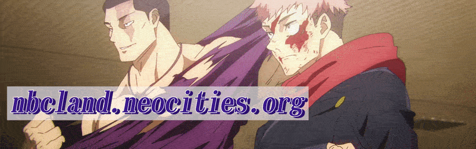

friends
Mainly fellow Neocities users, but also some of the people that have watched me grow as a person over the past 6 years.
Click on the images to visit their sites!
captainpoi
Closest on this list. By far the one that's stuck with me ever since we met. Had our disagreements but they always happen with friends. Don't regret meeting you at all.
Vincebus
Goated at image making. A troubled soul yet a very persistent man. Go follow him. Likes writing poetry, gives me writers envy.

TBTG
Francophile. Very good at building on Minecraft as well.
mopscrub
Writes essays about society. Never had a bad interaction with this guy.
Cyphercat
Goated at art. Very nice person, I discovered hotpot because of her. Only online friend I've ever met up with, it was as if we knew each other IRL for years. #Wholesome


2024-2026. Proudly made on Microsoft Windows™.
This website was built and tested with a Blink-based browser. Firefox users may have a slightly different user experience.
Not associated with NBC or ComCast. Any similarity or reference to corporations, living or dead is purely coincidental.
This site is built on and only meant to be viewed on a desktop.